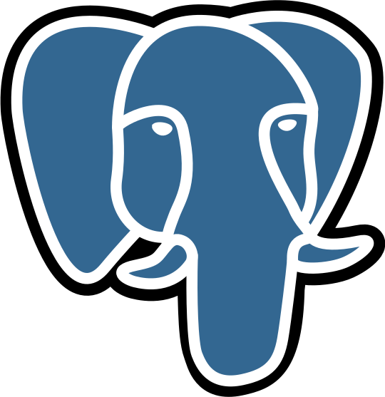

Technical Skills
習得している技術スタック

Python
データ分析、機械学習、Web開発（FastAPI/Flask）で使用。実装経験が最も多い。

JavaScript / TypeScript
フロントエンド開発とAPI連携で使用。モダンなフレームワークを活用。

HTML / CSS
レスポンシブデザインとモダンCSS技術を用いたUI/UX設計

GO
Webアプリ開発時のバックエンドで使用
Database & Others

SQL
SQLite, PostgreSQL
Java
オブジェクト指向設計の学習
Docker
コンテナ化・環境構築